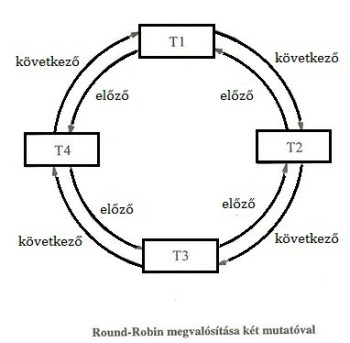
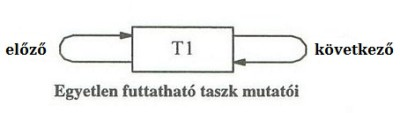

Esettanulmány az operációs rendszerbeli funkciók (OS funkciók) megvalósításához
Ütemezés
A látszatpárhuzamosság megvalósításához időzítőre és ütemezésre van szükségünk. Az időzítő szimulációját már korábban láttuk, miszerint időegységenként SIGALRM jelzést kapunk. A jelzés kezelője meghívja a „workspace” osztályunk „schedule” függvényét.
Most nézzük meg a „workspace” osztály interfészét. A „workspace” osztály tartalmaz egy taszktáblát, egy ütemezőt (a „schedule” az ütemező osztály egy példánya), az aktuális (processzoron lévő) folyamat (_current_task, azonosítóját, az ütemező és rendszerhívást kezelő eljárást, illetve még néhány segédeljárást.
/************************* opr_workspace.h **********************/
#ifndef __OPR_WORKSPACE_H
#define __OPR_WORKSPACE_H
#include "opr_task.h"
#include "opr_sched.h"
#include "debug.h"
#include <fstream>
class workspace {
public:
workspace( const char * kernel_filename,
const char * idle_filename, int max_task_count = 100 );
// Egy új taszk létrehozása és indítása.
void task_create(const char* task_filename );
// Az ütemező hívása, amely lecseréli a taszkot, ha szükséges.
void schedule( const char* s );
// A rendszerhívások kiszolgálása.
void syscall();
private:
// ADATOK
// A taszkok technikai adatai:
task_table _task_table;
// Az ütemezési adatokat tároló:
schedule _sched;
// Az aktuális taszk PID-je:
int _current_task;
int _max_task_count;
// A fájlnév a kulcs generáláshoz:
const char * _kernel_filename;
// FÜGGVÉNYEK
// A taszkváltás a processzoron:
void task_change( int next_task );
// A taszk törlése:
void task_delete();
public:
//DEBUG
debug sched_debug;
char * buffer;
};
#endif
A „schedule” függvény végzi az ütemezést, illetve az ütemezőnek készítettünk egy saját osztályt; ennek a „next_running” nevű függvénye megadja, hogy melyik legyen a következő folyamat, majd a „task_change” függvénnyel lecseréljük a processzoron a folyamatokat.
/************************* opr_workspace.cpp **********************/
#include "opr_workspace.h"
#include <sys/types.h>
#include <signal.h>
#include <iostream>
#include <stdio.h>
// Létrehozza a tárolókat és az IDLE taszkot.
workspace::workspace( const char * kernel_filename,
const char * idle_filename, int max_task_count ) :
_task_table(max_task_count), _sched(max_task_count),
_kernel_filename(kernel_filename), sched_debug("sched_debug") {
int idle_pid = _task_table.task_create( idle_filename,
kernel_filename );
_sched.init( idle_pid );
_current_task = idle_pid;
buffer = (char*)malloc(1024);
_max_task_count = max_task_count;
}
// Az ütemező függvény:
void workspace::schedule( const char* s ) {
int next_task = _sched.next_running( _current_task );
/**********DEBUG**************/
sched_debug.file << s << ", current: " <<
_current_task << ", next: " << next_task;
sched_debug.file << " [";
for( int i = 0; i < _max_task_count; ++i )
sched_debug.file << "(" << _task_table.task(i).lin_pid()
<< "," << _sched.get_state(i) << "," <<
_sched.prev(i) << "," << _sched.next(i) << ")";
sched_debug.file << "]" <<std::endl;
/**********DEBUG**************/
task_change( next_task );
}
// Taszkváltás a processzoron:
void workspace::task_change( int next_task ) {
// Az aktuális taszk leállítása, ha létezik:
if( _sched.get_state(_current_task) == sched::READY ||
_sched.get_state(_current_task) == sched::BLOCKED )
_task_table.task(_current_task).task_stop();
// A következő taszk állapotának a beállítása és
// a taszk processzorra adása:
_current_task = next_task;
_task_table.task(next_task).task_continue();
}
// Új taszk létrehozása:
void workspace::task_create(const char* task_filename ) {
int pid = _task_table.task_create( task_filename, _kernel_filename );
if( pi d>= 0 ) {
_sched.task_create( pid );
}
}
// Az aktuális taszk törlése:
// Töröljük a nyilvántartásból és ütemezőt hívunk,
// hogy másik taszk fusson helyette.
void workspace::task_delete() {
int pid = _current_task;
_current_task = _sched.prev(_current_task);
_sched.task_delete( pid );
_task_table.task_delete( pid );
sprintf( buffer, "task_delete(%d)", pid); // debug
schedule( buffer );
}
// A rendszerhívásokat kezelő függvény:
void workspace::syscall() {
// Az aktuális taszk rendszerhívás adatait tároló
// osztott memória:
int * task_sh_mem =
(int*) _task_table.task(_current_task).syscall_mem();
// A rendszerhívások:
switch( task_sh_mem[0] ) {
case 0: // exit()
task_delete();
break;
case 1: // getpid()
task_sh_mem[0] = _current_task;
_task_table.task(_current_task).task_continue();
break;
default: // default exit()
task_delete();
break;
}
}
Round-robin ütemezést használunk: amelynél a taszkokat „körbeállítjuk”, minden taszk ugyanakkora időszeletet kap. Ha egy taszknak lejár az időszelete, vagy blokkolódik, a következő futtatható taszkot futtassuk. A rendszer betöltésekor létrehozunk egy üresjárati folyamatot (IDLE), amelyet csak akkor futtatunk, ha nincs más futtatható folyamat. A taszkokat egy kétirányú fejelemes listában tároljuk, ahol a fejelem az IDLE folyamat (6.1. és 6.2. ábrák forrása: Horváth Gábor: Bepillantás az operációs rendszerek világába).
Round Robin megvalósítása két mutatóval
Egyetlen futtatható taszk mutatói
A listát statikusan egy vektorban tároljuk, ahol minden folyamat a PID-jének megfelelő indexű helyen van, így egy folyamatot konstans idő alatt el lehet érni. A folyamatok állapotait, a megelőző és a következő listaelem indexét tároljuk a vektorban.
A folyamatoknak (ütemezés szempontjából) kétféle állapotuk lehet: futáskész/futtatható (READY) és blokkolt (BLOCKED). A futtatható taszkokat lehet processzorra rakni, a szimulációban az éppen futó folyamatnak is READY lesz az állapota (a szakirodalomban RUNNING); a _current_task változó amúgy is tartalmazza az aktuális folyamatot, ezért nem szükséges egy új állapot bevezetése. A blokkolt folyamatokat az ütemező nem fogja kiválasztani, tehát a folyamatok várakoztatását úgy valósítjuk meg, hogy a folyamat állapotát BLOCKED-ra állítjuk. Az UNUSED állapotot a vektor nem használt, „üres” helyei esetén használjuk.
/************************* opr_sched.h **********************/
#ifndef __OPR_SCHED_H
#define __OPR_SCHED_H
#include <vector>
class sched {
public:
// A taszkok állapotai, UNUSED jelzi, hogy a vektor
// cellája üres, azaz a taszk nem létezik.
enum states{ UNUSED, READY, BLOCKED };
sched( int max_task_count = 100 ):
_table(max_task_count), _head(-1)
// A listát inicializálja, berakja a fejelemet stb.
void init( int idle_pid );
// Egy új taszk keletkezésekor be kell rakni az ütemezőbe.
bool task_create( int pid );
// Egy taszk megszűnésekor ki kell venni az ütemezőből.
bool task_delete( int pid );
// Megkeresi a következő taszkot, amelyiknek átadható a
// processzor.
int next_running( int akt );
// A pid taszk állapota:
// states& state( int pid ) { return _table[pid]._state; }
states get_state( int pid );
void set_state( int pid, states s );
// Egy taszk megelőzője a listában.
int prev( int pid ){ return _table[pid]._prev; }
// Egy taszk következője a listában.
int next( int pid ){ return _table[pid]._next; }
private:
// A lista egy eleme:
struct node {
node() : _state(UNUSED)
states _state; // a taszk állapota
int _prev,_next; // mutatók lista láncolásához
};
std::vector<node> _table; // a listát tároló vektor
int _head; // a fejelemre (IDLE) mutató
// segédfüggvények a lista kezeléshez
void head_create( int head_pid );
void list_in( int pid );
void list_out( int pid );
};
#endif
Az ütemező osztályunk „next_running” függvénye határozza meg a következő futtatható taszk azonosítóját. Ezt hívja meg a „workspace” ütemező eljárása. A függvény bemenő paramétere az aktuális folyamat azonosítója, és ehhez képest keresi a listában a következő futtathatót, de az IDLE folyamatot csak akkor választja, ha nincs más futtatható folyamat a listában. Ez tulajdonképpen a listán való lineáris keresés. A többi függvény folyamat létrehozása, törlése, illetve listakezelési műveletek segédfüggvényei.
/************************* opr_sched.cpp **********************/
#include "opr_sched.h"
// Létrehozza a fejelemet (IDLE), és futáskészre állítja.
void sched::init( int idle_pid ) {
head_create( idle_pid );
_table[idle_pid]._state = READY;
}
// Egy új taszk nyilvántartásba vétele.
bool sched::task_create( int pid ) {
if( pid >= 0 && pid < _table.size() ) {
list_in( pid );
_table[pid]._state = READY;
return true;
} else
return false;
}
// A taszk törlése az ütemezőből.
bool sched::task_delete( int pid ) {
if( pid >= 0 && pid < _table.size() && pid != _head ) {
list_out( pid );
_table[pid]._state = UNUSED;
return true;
} else
return false;
}
// Egy taszk állapotának a lekérdezése.
sched::states sched::get_state( int pid ){
if( pid >= 0 && pid < _table.size() )
return _table[pid]._state;
else
return UNUSED;
}
// Egy taszk állapotának a beállítása.
void sched::set_state( int pid, states s ) {
if( pid >= 0 && pid < _table.size() && pid != _head )
_table[pid]._state = s;
}
// A következő futtatható taszk keresése round-robin szerint,
// a lista következő futtatható taszkja, de az IDLE-t csak akkor
// választja, ha nincs más futtatható.
int sched::next_running( int akt ) {
// Menjünk körbe a listán, és keressük az első futáskész
// taszkot, de az IDLE-t ugorjuk át.
int pid = _table[akt]._next;
while( pid != akt && ( _table[pid]._state != READY
|| pid==_head ) )
pid = _table[pid]._next;
// Ha nem találtunk futáskész taszkot, és az aktuális
// sem folytatható, akkor IDLE.
if( _table[pid]._state != READY )
pid = _head;
return pid;
}
// A fejelem létrehozása a listában.
void sched::head_create( int head_pid ) {
_table[head_pid]._next = head_pid;
_table[head_pid]._prev = head_pid;
_head = head_pid;
}
// Egy új node beszúrása a listába.
void sched::list_in( int pid ) {
_table[pid]._next = _head;
_table[pid]._prev = _table[_head]._prev;
_table[_table[_head]._prev]._next = pid;
_table[_head]._prev = pid;
}
// Egy node törlése a listából.
void sched::list_out( int pid ){
_table[_table[pid]._prev]._next = _table[pid]._next;
_table[_table[pid]._next]._prev = _table[pid]._prev;
}
Vissza a tartalomjegyzékhez
")
")
")
")